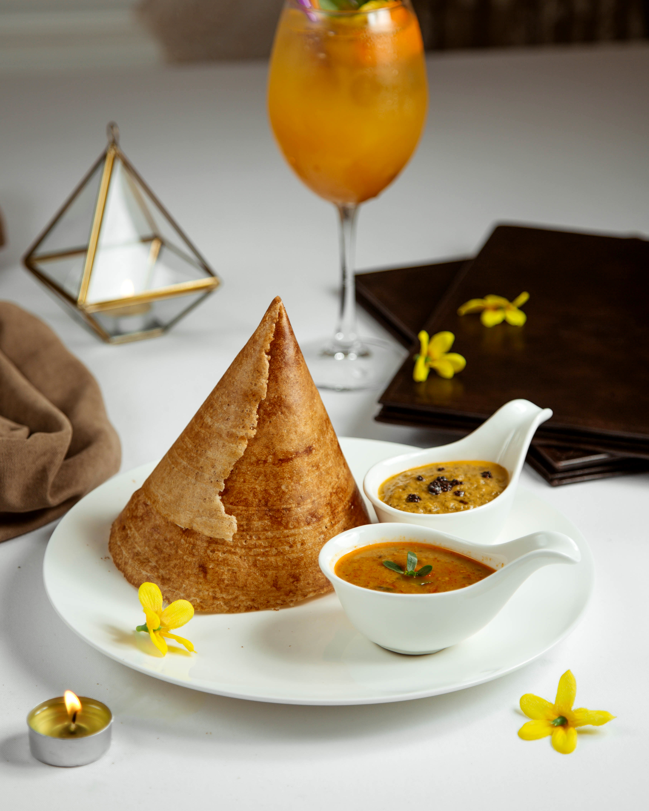

Dosa

Description
A dosa or thosai is a thin, savoury batter bread in South Indian cuisine made from a fermented batter of ground black gram and rice. Dosas are served hot, often with chutney and sambar.
It can be eaten as a snack, breakfast, or anytime you’re in the mood for a delicious, savory meal! Like many Indian foods, dosa varies depending on region and occasion.
Ingredients
- 1 cup brown rice flour
- ½ cup whole wheat flour
- 1 ½ cups water
- 1 red onion, finely chopped
- 1 clove garlic, minced
- ¼ cup fresh cilantro, chopped
- ¼ teaspoon white sugar
- ½ teaspoon ground turmeric
- 1 teaspoon ground cumin
- 2 teaspoons whole mustard seeds
- 1 teaspoon cumin seeds
- 1 teaspoon ground coriander
- 1 teaspoon ground ginger
- 1 pinch cayenne pepper
- 3 tablespoons rice vinegar
- 1 tablespoon vegetable oil
Steps
- Combine the brown rice flour and whole wheat flour in a mixing bowl.
- Gradually add the water and whisk until you get a smooth, thin batter.
- Mix in the onion, garlic, cilantro, sugar, turmeric, cumin, mustard seeds, cumin seeds, coriander, ginger, cayenne pepper, and rice vinegar until everything is well combined.
- Cover the bowl and chill in the refrigerator for at least 30 minutes, or overnight for best results.
- Warm the oil in a skillet over medium heat.
- Pour about 1/4 cup of the batter into the pan and spread it evenly into a thin circle.
- Cook for 1 minute, then flip and cook for another minute on the other side.
- Transfer the cooked dosa to a plate.
- Repeat the process with the remaining batter.
Home